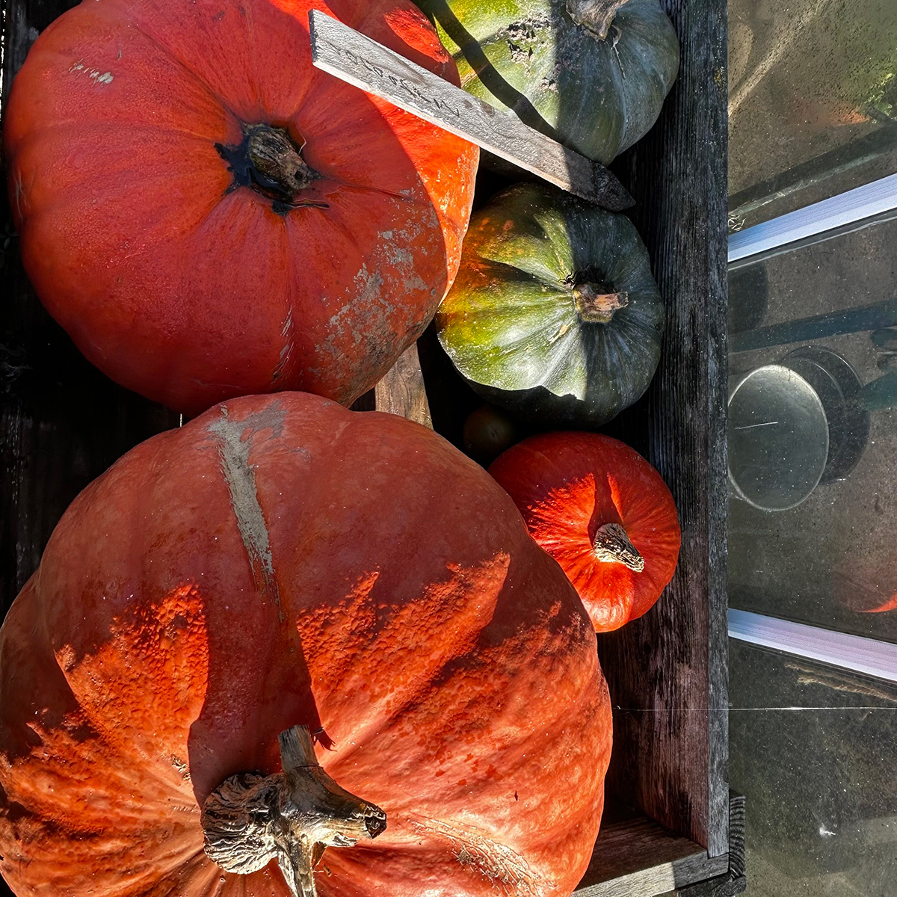
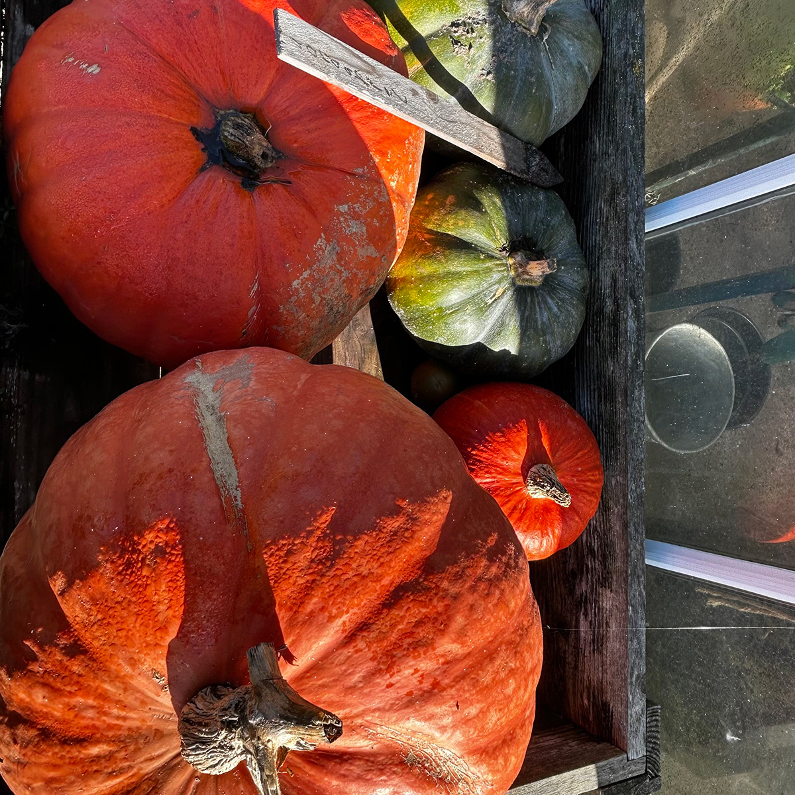

In Amsterdam is de Kalff School tuin niet de enige, want er zijn er nog veel meer! Ieder jaar volgen er namelijk ongeveer 7000 leerlingen uit groep 6 en 7 het programma van de schooltuin. Om precies te zijn zijn er 13 schooltuinen.
- Aemstel Schooltuin
- Blijdestijn Schooltuin
- Broekhuijsen-Leewis Schooltuin
- Gaasperdam Schooltuin
- Kalff Schooltuin
- Nijkamp Schooltuin
- Osdorp Schooltuin
- Ridderbos Schooltuin
- Roos Schooltuin
- Schaap Schooltuin
- Toorop Schooltuin
- Vink Schooltuin
- Wagner Schooltuin